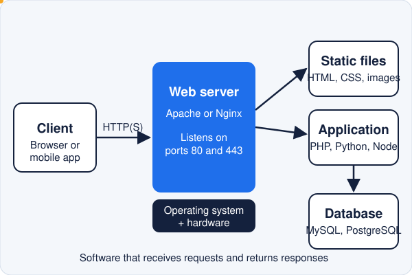
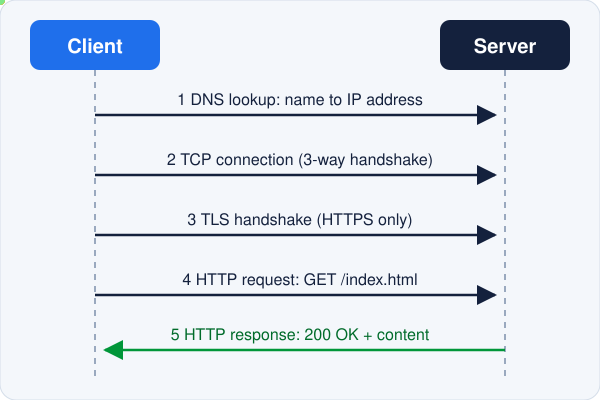
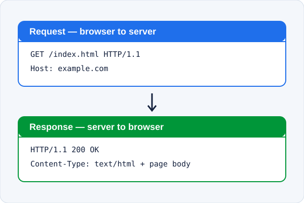
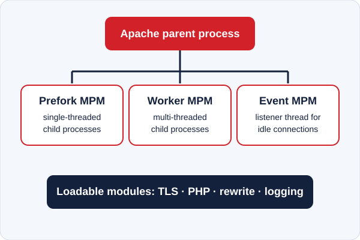
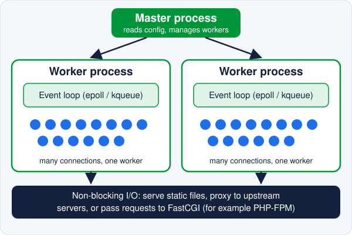
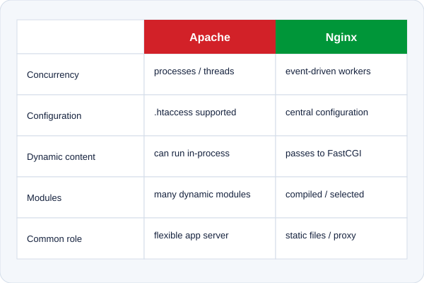
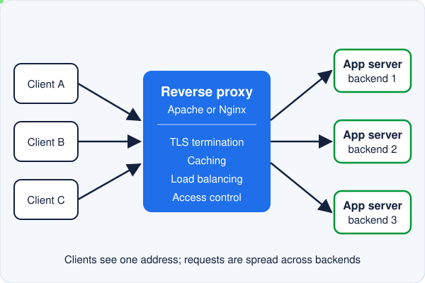

Serve files
Send HTML, CSS, JavaScript, images and downloads straight from disk.
Web infrastructure · field guide 01
Every page, image and API response passes through it. Meet the web server—and understand why Apache and Nginx take such different routes to the same destination.
IN THIS GUIDE
01How a request travels02Two server architectures03How to make the callStart with the basics
A web server is both the always-online machine that holds a website and the software that listens for requests on it. Apache and Nginx are the software layer: they receive an HTTP request, decide where it should go, and return a response.
Think of it as a skilled receptionist for your application—fast with simple requests, careful with secure ones, and able to pass complicated work to the right team behind the scenes.

Send HTML, CSS, JavaScript, images and downloads straight from disk.
Hand dynamic work to an application written in PHP, Python or Node.js.
Use TLS certificates to keep HTTPS traffic private and authentic.
Write access and error logs that help operators understand the system.
One visit, many steps
Your browser and a server exchange a short, structured set of messages—usually before you have time to notice.

example.com into an IP address.443 for HTTPS./index.html.The language of the web
Requests include a method, path and headers. Responses include a status code, headers and usually a body. HTTPS is simply HTTP protected by TLS—adding encryption, integrity and server authentication.

04 / THE FLEXIBLE ONE
Apache is a modular veteran of the web. Its feature-rich ecosystem and per-directory configuration make it a natural fit for adaptable environments and traditional hosting.

Optional modules add HTTPS, URL rewriting, proxying and much more.
Its Multi-Processing Module selects how connections are handled: prefork, worker or event.
.htaccess enables directory-level rules without editing the central configuration.
<VirtualHost *:80>
ServerName example.com
DocumentRoot /var/www/example
</VirtualHost>05 / THE CONCURRENCY SPECIALIST
Nginx was designed around an event-driven model. A small number of worker processes can keep many connections moving without giving each one its own thread.

Workers react when connections are ready instead of waiting on each one.
Reverse proxying, load balancing and caching are core strengths, not afterthoughts.
Rules live in central files and are applied with a graceful reload—there is no .htaccess equivalent.
server {
listen 80;
server_name example.com;
root /var/www/example;
}It depends on the work
Neither server wins every scenario. Architecture, workload and your team’s needs are more useful guides than a generic “faster” claim.

| QUESTION | APACHE | NGINX |
|---|---|---|
| How does it work? | MPMs using processes and threads | Event-driven workers |
| How is it configured? | Central files + optional .htaccess | Central configuration files |
| Dynamic content? | Can use in-process modules or PHP-FPM | Passes work to FastCGI or an upstream app |
| Especially useful for? | Flexible per-site rules, shared hosting | Static files, many open connections, proxying |
07 / A COMMON PATTERN
A reverse proxy is the public-facing layer that can terminate HTTPS, cache responses and distribute requests across application servers. Nginx excels here, and Apache can do it too.

Your practical starting point
START WITH
.htaccess compatibilitySTART WITH
REMEMBER
It is perfectly normal to place Nginx in front and let Apache serve an existing application behind it.
That’s the signal
It is the system that makes the web responsive, secure and available. Once you understand the path of a request, Apache and Nginx stop being mysterious names—and become useful tools.
Back to the top ↑